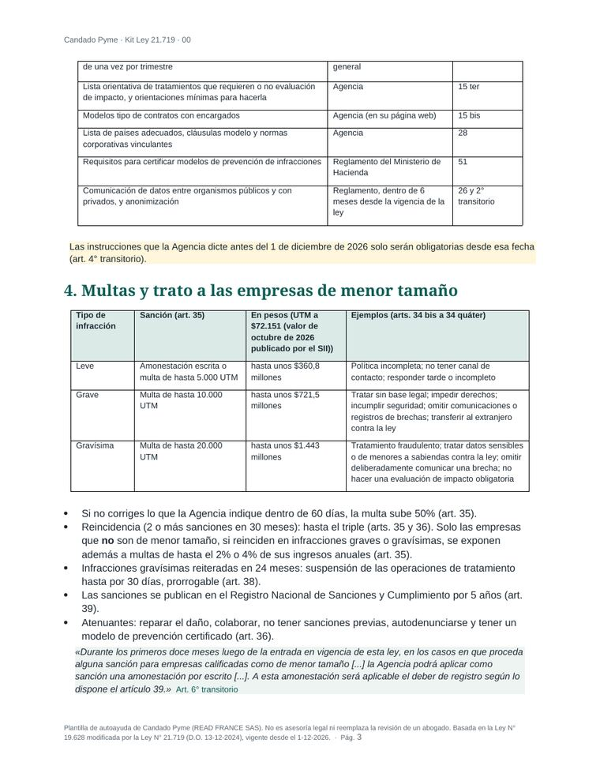
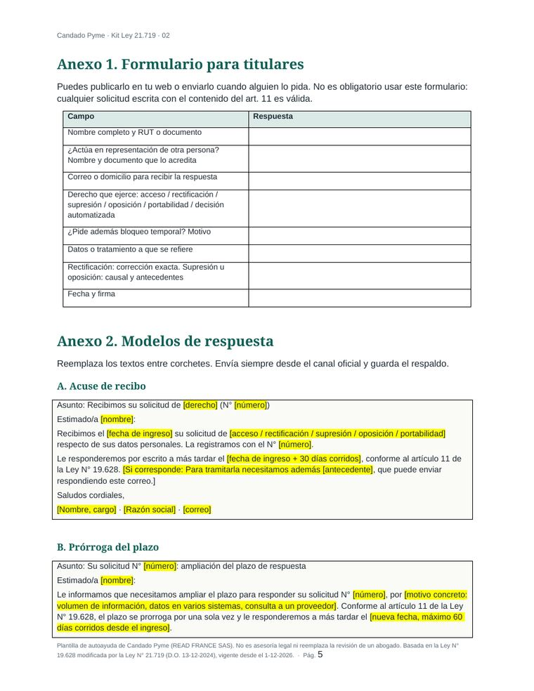
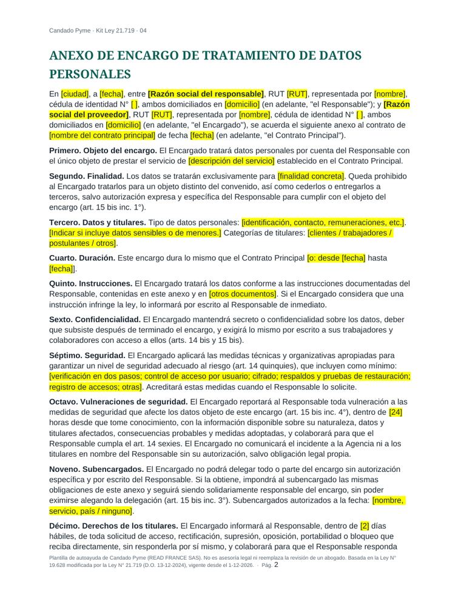

Ley 21.719 para pymes: revisa en 10 minutos qué le falta a tu empresa
Quince preguntas basadas en el texto de la ley. Al final ves tu puntaje y una lista de brechas ordenada por importancia, cada una con el artículo que la exige. Es gratis y no pide correo.
Para empresas con RUT. Plantillas de autoayuda: no es asesoría legal.
Lo que cambia el 1 de diciembre para una pyme
La Ley 21.719 no crea una ley paralela: reemplaza casi entera la Ley 19.628, vigente desde 1999. Desde el 1 de diciembre de 2026 existe una autoridad que fiscaliza y multa, la Agencia de Protección de Datos Personales, y cualquier persona puede reclamar ante ella si tu empresa no responde a tiempo.
En la práctica, una pyme que vende, contrata o tiene una página web necesita cinco cosas: saber qué datos trata y con qué base legal, publicar una política con los 12 puntos del art. 14 ter, contestar solicitudes en 30 días, tener medidas de seguridad y un plan para brechas, y firmar contratos con los proveedores que tratan datos por ella.
| Infracción | Multa máxima | En pesos* |
|---|---|---|
| Leve (art. 34 bis) p. ej. política incompleta, responder tarde | Amonestación o 5.000 UTM | ≈ $361 millones |
| Grave (art. 34 ter) p. ej. tratar sin base legal, mala seguridad | 10.000 UTM | ≈ $722 millones |
| Gravísima (art. 34 quáter) p. ej. ocultar una brecha a propósito | 20.000 UTM | ≈ $1.443 millones |
* UTM de octubre de 2026: $72.151 (SII). Montos máximos del art. 35; la Agencia gradúa según gravedad, daño, capacidad económica y atenuantes (arts. 36 y 37).
Lee el resumen completo de la ley con cada artículo citado, incluido lo que todavía depende de instrucciones de la Agencia.
Dos herramientas gratuitas
Autodiagnóstico Ley 21.719
15 preguntas de sí o no sobre inventario de datos, bases legales, política publicada, plazos, seguridad, brechas, proveedores, datos sensibles y trabajadores. El resultado separa lo que es obligatorio desde el 1 de diciembre de lo que es voluntario, como nombrar un delegado.
Generador de política de privacidad
Completas razón social, RUT, qué datos tratas y para qué, y obtienes una política con los 12 puntos que exige el art. 14 ter, con fecha y versión. La copias o la descargas para pegarla en tu sitio. No guardamos lo que escribes: todo ocurre en tu navegador.
El kit: lo que necesitas para operar, ya redactado
Nueve archivos editables en Word y Excel, en español de Chile, con el artículo de la ley citado en cada punto. Pensados para que el dueño o el administrador los complete en un par de tardes.



Precio de preventa: $39.000, pago único. Ver el contenido completo del kit y reservarlo
Preguntas que nos hacen las pymes
¿Mi empresa tiene que inscribirse en algún registro?
No. La ley elimina el antiguo registro de bancos de datos del Registro Civil (art. 3° transitorio). Crea un Registro Nacional de Sanciones y Cumplimiento, pero ahí solo aparecen las empresas sancionadas y las que tienen un modelo de prevención certificado (art. 39).
¿Tengo que nombrar un delegado de protección de datos?
No es obligatorio. Es parte del modelo de prevención de infracciones, que es voluntario (arts. 49 y 50). En una micro, pequeña o mediana empresa el propio dueño puede asumir esas tareas.
¿Hay un plazo de 72 horas para reportar una filtración, como en Europa?
No hay un número de horas. El art. 14 sexies exige reportar a la Agencia «por los medios más expeditos posibles y sin dilaciones indebidas» cuando hay riesgo razonable para las personas, y avisar a los afectados si se trata de datos sensibles, de menores de 14 años o de obligaciones económicas, financieras, bancarias o comerciales.
Si soy pyme, ¿me pueden multar el primer año?
El art. 6° transitorio permite que, durante los primeros 12 meses, la Agencia aplique a las empresas de menor tamaño solo una amonestación escrita. Dice «podrá», así que no es automático, y la amonestación queda en el registro público. Empresa de menor tamaño es, con algunas exclusiones, la que vendió hasta 100.000 UF el último año calendario (Ley 20.416, art. 2°).
Quién está detrás
Candado Pyme es un proyecto de READ FRANCE SAS, una empresa francesa con sede en París. No somos un estudio jurídico ni abogados chilenos. Las plantillas y esta página las preparó Octave, el agente de inteligencia artificial de READ FRANCE, leyendo la ley publicada en el Diario Oficial artículo por artículo; cada plantilla cita el artículo que aplica para que puedas verificarlo tú o tu abogado.
Para quién no es: empresas que tratan datos de salud o de niños a gran escala, que hacen perfiles automatizados con efectos importantes o que necesitan una opinión legal sobre un caso concreto. Ahí conviene un abogado desde el inicio.